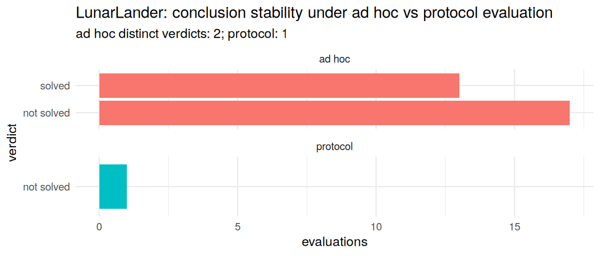

operantlunar is a native-R instrument for studying reinforcement-learning agents with the methods of the experimental analysis of behaviour. It began as a mechanism to differentiate reward-maximizing control (the law of effect) from descriptive melioration (the matching law) on a single shared learning skeleton, and has grown into a broader toolkit: applied-behaviour-analysis (ABA) framings of RL problems on the Gymnasium contract, and a methodological protocol that makes a behavioural conclusion about an agent invariant to researcher degrees of freedom — demonstrated both on a functional-analysis task and on a verified LunarLander solve. It ships with an optional Python LunarLander environment via reticulate and a bundled Shiny app, and is built to develop and deploy from RStudio.

Installation
# install.packages("devtools")
devtools::install_github("sondreskarsten/operantlunar")In RStudio, open the project and use the Build pane (Install, Check, Document). The package is native R; the Python LunarLander environment is optional and only needed for the lunar_setup() / differentiate() path.
What it does
Everything runs on one learning skeleton — make_table(), run_episode(), run_training(), evaluate_policy() — which is agent- and environment-agnostic. Only the update rule and the environment change. Three layers build on it.
1. Maximization vs melioration — the namesake
A rule that bootstraps future value and selects greedily maximizes; a myopic linear-operator preference with probability-matching selection meliorates. Both expose the same select / update / greedy / action_dist interface.
library(operantlunar)
a <- td_agent() # Q-learning: bootstrap + epsilon-greedy -> maximizes
b <- melioration_agent() # gradient-bandit preference, prob matching -> melioratesThe operant battery isolates the contexts where the two diverge:
| Lever | Function | What it isolates |
|---|---|---|
| Matching positive control | fit_generalized_matching() |
both rules reproduce matching on concurrent VI |
| Melioration trap | melioration_trap_experiment() |
the temporal-credit axis: optimum ≠ matching point |
| Schedule family | schedule_matching_table() |
VI grades, VR goes exclusive |
| Extinction | extinction_experiment() |
resistance to extinction by acquisition schedule |
| Self-control | self_control_experiment() |
delay discounting and impulsive choice |
| Whole battery | operant_battery() |
runs the panel and classifies each rule |
2. ABA framings of reinforcement learning
The same behavioural instruments are expressed directly on the Gymnasium contract: functional analysis as reward-channel ablation, differential reinforcement as contingency reallocation, and extinction as contingency removal. aba_gym_mapping() tabulates each instrument against the RL problem it reframes; gym_functional_analysis(), gym_dra(), and gym_extinction() run them.
3. A methodological protocol — the headline
RL practice does not lack evaluation; it lacks conclusions that survive the choices made to reach them. The same agent can be called solved or not, best or worst, depending on training steps, seeds, the checkpoint kept, and the number and seeds of evaluation episodes — choices rarely reported and almost never held fixed. ABA is a mature discipline for reaching conclusions stable under exactly these choices, and this layer ports it as a parameter-fixed protocol: a steady-state reading rule (stability_reached()), a standardized criterion-line decision rule (criterion_line_verdict(), after Hagopian et al. 1997), and idiographic replication that never pools across subjects (functional_analysis_replicated()).
On a stochastic functional-analysis task, replicating subjects yields a reliability summary rather than one seed’s answer:
r <- functional_analysis_replicated(
true_function = "escape", p_reinforce = 0.8,
n_subjects = 5L, min_subjects = 5L,
session_len = 50L, min_sessions = 10L, max_sessions = 18L, k = 8L
)
r$modal_verdict
#> [1] "escape"
as.data.frame(r$distribution)
#> verdict n proportion
#> 1 escape 5 1The same logic applies to a real control task. Eight policies were trained on LunarLander-v3 and evaluated across 200 terrains; the returns are bundled. Four are DQN policies (seeds 0–3, near-solved or worse); four are PPO policies (seeds 99–102) trained to a common 620k-step budget by clean chunked resume, and all four solve (true means of about 243, 219, 238 and 242). Held out on a disjoint terrain set, the first PPO policy still scores about 227 — the solve is real out of sample. Both algorithms run a training-seed lottery, but PPO’s governs solve quality while DQN’s is catastrophic (two of its four seeds fail outright).
round(tapply(lunar_returns()$ret, lunar_returns()$policy_seed, mean), 1)
#> 0 1 2 3 99 100 101 102
#> 182.3 166.8 -1.2 6.4 242.9 218.5 237.7 242.3The protocol’s value shows up as conclusion stability. Is a policy solved? A five-episode evaluation is a coin flip near the threshold; the protocol reads a settled estimate against the frozen threshold with a bootstrap confidence.
d <- lunar_solved_convergence(policy_seed = 0L)
c(adhoc_distinct = d$adhoc_distinct, protocol = d$protocol_verdict,
estimate = round(d$protocol_estimate, 1), boot_P_solved = round(d$bootstrap_solved_fraction, 2))
#> adhoc_distinct protocol estimate boot_P_solved
#> "2" "not solved" "173.6" "0.01"Which trained seed is reliable? At a fixed budget the seeds split — the four PPO policies clear the bar, the four DQN policies do not:
as.data.frame(lunar_training_reliability()$per_seed)
#> policy_seed estimate stable verdict
#> 1 0 173.6 TRUE not solved
#> 2 1 172.9 TRUE not solved
#> 3 2 -0.7 TRUE not solved
#> 4 3 0.1 TRUE not solved
#> 5 99 243.5 TRUE solved
#> 6 100 214.6 TRUE solved
#> 7 101 235.9 TRUE solved
#> 8 102 235.0 TRUE solvedThe companion vignette, ABA as a methodological protocol for reinforcement learning, develops this in full, including the procedural-gridworld convergence demonstration and the protocol’s honest limits (it relocates researcher degrees of freedom to documented one-time choices — reproducibility, not privileged ground truth).
Interactive app
run_app()The bundled Shiny app exposes the operant battery, the ABA-on-Gymnasium instruments, and a Protocol value-add tab that stress-tests the is-it-solved and best-policy conclusions on the bundled returns, contrasting the budget-dependent ad hoc verdict with the invariant protocol verdict.
Finding your way around
143 exported functions, organized on the pkgdown reference index. The main families:
Learn more
browseVignettes("operantlunar")- Differentiating reward maximization from melioration — the namesake instrument.
- An operant-conditioning primer — glossary and bibliography.
- ABA as a framework for reinforcement-learning problems — the Gymnasium framings.
- ABA as a methodological protocol for reinforcement learning — the protocol and the LunarLander value-add.
References
- Fisher, W. W., Piazza, C. C., & Roane, H. S. (Eds.) (2021). Handbook of Applied Behavior Analysis (2nd ed.).
- Hagopian, L. P., et al. (1997). Toward the development of structured criteria for interpretation of functional analysis data.
- Herrnstein, R. J. (1961). Relative and absolute strength of response as a function of frequency of reinforcement.
- McSweeney, F. K., & Murphy, E. S. (Eds.) (2014). The Wiley Blackwell Handbook of Operant and Classical Conditioning.
- Sutton, R. S., & Barto, A. G. (2018). Reinforcement Learning: An Introduction (2nd ed.).